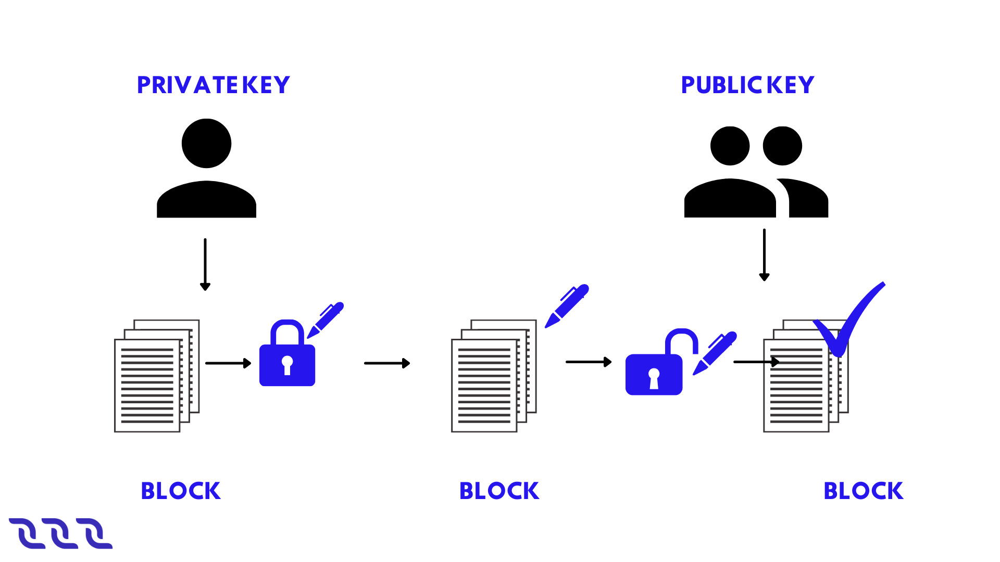
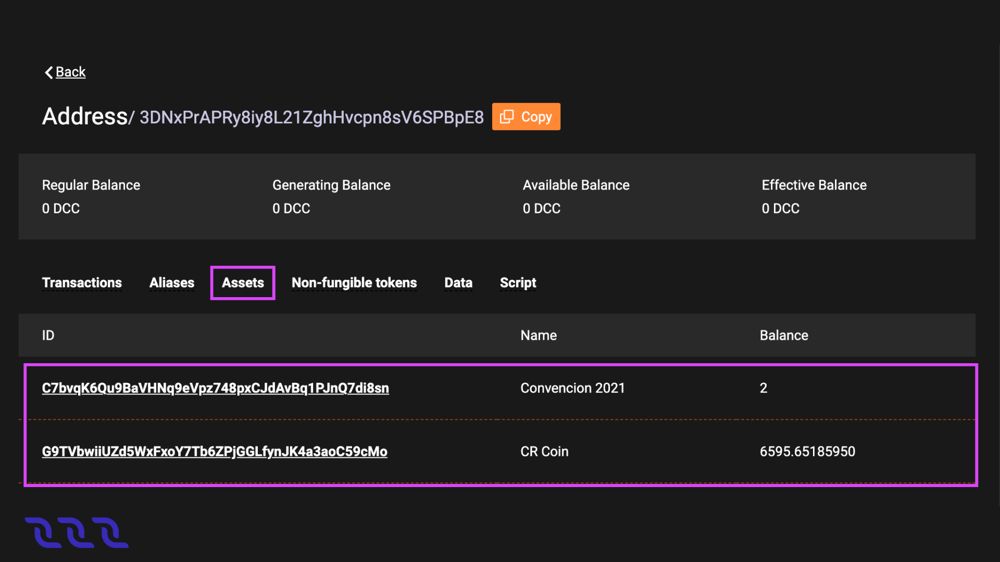
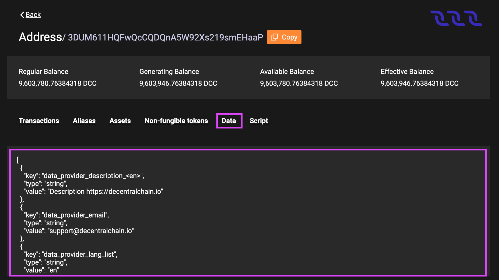

Cuenta#
DecentralChain utiliza un modelo basado en cuentas:
Cada transacción se crea en nombre de una determinada cuenta.
Todos los tokens pertenecen a ciertas cuentas.
Todos los datos están asociados a cuentas. Para obtener más información, consulte el artículo almacenamiento de datos de cuenta.
Llaves de Cuenta#
A diferencia de las aplicaciones centralizadas, los usuarios no tienen nombres de usuario ni contraseñas en la cadena de bloques. La identificación del usuario y la validación de sus acciones se realizan mediante un par de claves vinculadas criptográficamente:
La clave privada se utiliza para firmar transacciones u órdenes.
La clave pública permite la verificación de la firma digital.
Cada transacción contiene la clave pública de la cuenta del remitente. El remitente genera una firma digital de la transacción utilizando la clave privada de la cuenta. La firma y la clave pública del remitente se utilizan para verificar la autenticidad de los datos de la transacción y para verificar que la firma de la transacción coincida con la clave pública.
DecentralChain utiliza un sistema criptográfico asimétrico basado en la curva elíptica Curve25519-ED25519 con claves X25519. La guía para generar claves y firmas se proporciona en el artículo detalles prácticos criptográficos. Las claves privadas y públicas son matrices de bytes \(32\). En las interfaces de usuario, las claves se muestran como cadenas codificadas en base58. Las claves codificadas en Base58 pueden tener diferentes longitudes, la longitud máxima es \(44\) caracteres.
Ejemplo de clave privada en base58:
6yCStrsBs4VgTmYcSgF37pmQhCo6t9LZk5bQqUyUNSAs
Ejemplo de clave pública en base58:
5cqzmxsmFPBHm4tb7D8DMA7s5eutLXTDnnNMQKy2AYxh
Frase Secreta (Semilla)#
La clave privada se puede generar a partir de alguna frase inicial aleatoria utilizando funciones hash. La clave pública se obtiene a partir de la clave privada mediante una multiplicación de curva elíptica. La dirreción de la cuenta se obtiene de la llave pública. Todas estas transformaciones son unidireccionales. La dirección opuesta es casi imposible en términos de los cálculos requeridos.

La frase secreta (también conocida como frase semilla, frase de respaldo) puede ser cualquier combinación de símbolos, palabras o bytes. Las aplicaciones de billetera DecentralChain generalmente usan un conjunto aleatorio de \(15\) palabras en inglés de \(2048\) palabras disponibles. Usar una frase de este tipo es seguro ya que la probabilidad de generar dos frases semilla idénticas es \(\frac{1}{2048^{15}}\), por lo que la fuerza bruta llevará millones de años en una CPU promedio. El objetivo de usar una frase secreta (en lugar de una clave privada) es simplificar la experiencia del usuario: la frase secreta es mucho más fácil de escribir o recordar.
Ejemplo de una frase secreta:
body key praise enter toss road cup result shrimp bus blame typical sphere pottery claim
Informacion de Seguridad:
La frase secreta o la clave privada derivada de ella brindan un control completo sobre la cuenta, incluida la capacidad de disponer de fondos. No le des tu frase secreta o clave privada a nadie, y no los publiques ni los envíes.
La frase secreta no se puede cambiar: otra frase secreta (incluso una que difiera en un solo carácter) generará un par de claves diferente y, por lo tanto, una cuenta diferente.
Si pierde su frase secreta o clave privada, ya no podrá acceder a su cuenta nunca más. Le recomendamos encarecidamente que haga una copia de seguridad de su frase secreta.
Si la frase secreta está comprometida (se la envió accidentalmente a alguien o sospecha que los estafadores se la llevaron), cree inmediatamente una nueva cuenta y transfiérale todos los activos.
Para conocer formas de generar claves de cuenta, consulte el artículo creación de una cuenta.
Crear una Cuenta#
Crear una cuenta significa generar un par de llaves de cuenta y una dirección con base en una frase secreta (semilla).
Puede usar Decentral.Exchange en línea para crear una cuenta.
En la pantalla principal, haga clic en Crear Cuenta, luego en el cuadro Crear Contraseña, escriba la contraseña, escríbala nuevamente en el cuadro Confirmar Contraseña, acepte los Términos y Condiciones, así como la Política de Privacidad y haga clic en Continuar.
En la siguiente pantalla, seleccione Crear Cuenta y luego elija el avatar que más le guste para su cuenta y haga clic en Continuar.
Después de eso, seleccione el nombre que desea que tenga la cuenta en ese dispositivo en particular y haga clic en Continuar.
En este punto, será redirigido a la página de su billetera. Debe hacer una copia de seguridad de su frase semilla.
Respaldar Frase Semilla#
Abra la pantalla principal Decentral.Exchange y asegúrese de haber iniciado sesión en su cuenta. Haga clic en el avatar de la cuenta y vaya a Configuración > Seguridad.
Haga clic en Mostrar en el cuadro Respaldar Frase Semilla.
Escriba la frase y guárdela en un lugar seguro.
No almacene la frase de respaldo sin cifrar en ningún dispositivo electrónico. Recomendamos encarecidamente hacer una copia de seguridad de la frase semilla, ya que esta es la única forma de restaurar el acceso a su cuenta en caso de pérdida o robo del dispositivo.
Ingresar a la Cuenta#
Abra la pantalla principal Decentral.Exchange y haga clic en Crear Cuenta, luego en el cuadro Crear Contraseña escriba la contraseña, escríbala nuevamente en el cuadro Confirmar Contraseña, acepte los Términos y Condiciones también como la Política de Privacidad y haga clic en Continuar.
En la siguiente pantalla, seleccione Importar Cuentas, luego elija la opción Semilla o Clave.
Después de eso, escriba la semilla de la que hizo una copia de seguridad en el pasado y haga clic en Continuar, luego seleccione el nombre que desea que tenga la cuenta en ese dispositivo en particular y haga clic en Continuar.
En este punto, será redirigido a la página de su billetera.
Olvidé mi Contraseña#
Abra la pantalla principal de Decentral.Exchange y haga clic en Olvidé mi Contraseña y luego seleccione la opción Restablecer todo.
En la siguiente pantalla, en el cuadro Crear Contraseña, ingrese la contraseña, escríbala nuevamente en el cuadro Confirmar Contraseña, acepte los Términos y Condiciones, así como la Política de Privacidad y haga clic en Continuar.
Cuando termine, seleccione Importar Cuentas, luego elija la opción Semilla o Clave.
Después de eso, escriba la semilla de la que hizo una copia de seguridad en el pasado y haga clic en Continuar, luego seleccione el nombre que desea que tenga la cuenta en ese dispositivo en particular y haga clic en Continuar.
En este punto, será redirigido a la página de su billetera.
Dirección#
La dirección es un atributo de la cuenta derivado de la llave pública. La dirección también contiene el ID de la cadena que identifica la red blockchain, por lo tanto, la dirección en Mainnet no se puede usar en Testnet y viceversa.
La dirección es una matriz de \(26\) bytes (consulte el formato binario de dirección). En las interfaces de usuario, la dirección se muestra como una cadena codificada en base58.
3PDfnPknnYrg2k2HMvkNLDb3Y1tDTtEnp9X
Normalmente, la dirección que comienza con 3P se refiere a Mainnet, y la dirección que comienza con 3M o 3N se refiere a Testnet o Stagenet.
La dirección se utiliza para obtener información sobre la cuenta:
Entradas de almacenamiento de datos de cuenta,
Script asignado, etc.
Se indica la dirección:
En transacciones para transferencia, transferencia masiva y arrendamiento para identificar un destinatario;
En transacción para invocar scripts para identificar una dApp invocada.
Obtener Dirección Personal#
Abra la pantalla principal Decentral.Exchange y asegúrese de haber iniciado sesión en su cuenta. Haga clic en el avatar de la cuenta y navegue hasta Dirección.
Copie la dirección y úsela, o también puede usar el código QR generado.
Alias#
Alias es un nombre corto y fácil de recordar de la dirección. El alias es único en la cadena de bloques. Una dirección puede tener varios alias. El alias se puede utilizar en lugar de la dirección:
En transacciones para transferencia, transferencia masiva y arrendamiento para identificar un destinatario; así como en transacciones para invocar scripts para identificar una dApp invocada.
Para encontrar una cuenta en DecentralChain Explorer.
El alias no se puede eliminar.
Requisitos de Alias#
La longitud de un alias puede ser de \(4\) a \(30\) bytes (el carácter \(1\) puede ocupar hasta \(4\) bytes). Se permiten los siguientes caracteres:
letras latinas minúsculas
números
punto
guión bajo
guión
@
Crear Alias#
Puedes usar Decentral.Exchange en línea para crear un alias.
Asegúrate de haber iniciado sesión en tu cuenta. En la pantalla principal, haga clic en el avatar de la cuenta y navegue hasta Alias.
En la siguiente pantalla, seleccione Crear Nuevo y luego escriba el nombre del alias y haga clic en Crear Nuevo otra vez para completar el proceso.
Ver Alias#
La lista de alias de cuenta, así como otros datos de la cadena de bloques, es pública y cualquiera puede leerla. Por ejemplo, puede ver los alias en DecentralChain Explorer. Para hacer esto, busque una cuenta por su dirección y cambie a la pestaña Alias.
Usando Node REST API, puedes obtener una lista de alias por dirección usando el método GET/alias/by-address/{address} y una dirección por alias usando el método GET /alias/by-alias/{alias}.
Formato Binario#
Consulte el artículo formato binario de dirección.
Saldo de Cuenta#
Account balance is the amount of a token (asset) that belongs to the cuenta.
Una cuenta puede almacenar diferentes tokens en diferentes cantidades. Por ejemplo, una cuenta puede tener \(50\) DecentralCoins y USD-N al mismo tiempo. La cantidad del token Y en la cuenta se denomina saldo de la cuenta en el token Y. Si no hay un token Y en la cuenta, se dice que el saldo de la cuenta en el token Y es igual a cero.
Saldo de Cuenta en DecentralCoin#
Hay cuatro tipos de saldos en DecentralChain:
regular
disponible
efectivo
generador
El saldo regular es la cantidad de DecentralCoins que pertenece directamente a la cuenta. Los otros tipos de saldos se determinan contando arrendamientos DecentralCoins.
Introduzcamos la siguiente notación:
R is the regular balance,
Lo is the amount of DecentralCoins which the account leased to other accounts,
Li is the amount of DecentralCoins which are leased to the account by other accounts.
Entonces:
Available balance = R – Lo
Effective balance = R – Lo + Li
Generating balance is the minimum value of the effective balance during the last 1000 blocks.
El saldo de generación de un nodo afecta la capacidad de participar en la generación de bloques. Para generar bloques, necesita un saldo de generación de al menos \(10000\) DecentralCoins. Cuanto mayor sea el saldo de generación, mayor será la posibilidad de agregar el siguiente bloque.
Ver Saldo de Cuenta#
Los saldos de cualquier cuenta, así como otros datos de blockchain, son públicos y cualquiera puede leerlos.
Por ejemplo, puede ver la lista de tokens y su cantidad en la cuenta en el Explorador DecentralChain. Para hacer esto, busque una cuenta por su dirección o alias. Los saldos en DecentralCoins se muestran justo debajo de la dirección, los saldos en otros activos están en la pestaña Activos y tokens no fungibles (NFT) están en la pestaña de tokens no fungibles.
Recargar Saldo#
Puedes comprar tokens DecentralCoin en Decentral.Exchange.
Almacenamiento de Datos de Cuenta#
El almacenamiento de datos de cuenta es un almacenamiento de llave-valor asociado con una cuenta. La llave de cada entrada es una cadena única. El valor son los datos que se almacenan, se almacenan utilizando uno de los tipos:
Cadena
Booleano
Entero
Matriz de bytes
El tamaño del almacenamiento de datos de una cuenta es ilimitado. Para conocer las limitaciones de tamaño de llave y valor, consulte el artículo transacción para datos.
Ver Datos de Cuenta#
El almacenamiento de datos de cualquier cuenta, así como otros datos de blockchain, son públicos y cualquiera puede leerlos. Por ejemplo, puede ver las entradas de datos en DecentralChain Explorer. Para hacer esto, busque una cuenta por su dirección o alias y cambie a la pestaña Datos.
Agregar, Modificar, Eliminar Entradas#
El propietario de la cuenta puede agregar, modificar o eliminar entradas del almacenamiento de datos de la cuenta a través de una transacción para datos.
Un dApp script puede agregar, modificar o eliminar entradas en el almacenamiento de datos de la dApp como resultado de una transacción para invocar scripts a través de acciones de script:
dApp y Cuenta Inteligente#
Una cuenta con un script asignado se convierte en una dApp o cuenta inteligente. dApp es la cuenta con el dApp script asignado. dApp es una aplicación cuyas funciones se pueden llamar desde otras cuentas a través de una transacción para invocar scripts. Las funciones a las que se puede llamar pueden aceptar pagos a la dApp y también realizar acciones aplicadas a la cadena de bloques:
Agregue, modifique o elimine entradas del almacenamiento de datos de la cuenta dApp.
Transferir tokens del saldo de dApp.
Emitir, reemitir, quemar tokens en nombre de la dApp, configuración de patrocinio.
Más allá de eso, un script de dApp puede comprender la función de verificación que permite o deniega transacciones y pedidos que se envían en nombre de la cuenta de dApp según las condiciones especificadas. La función de verificación reemplaza la verificación predeterminada que se usa para verificar la firma del remitente y le permite establecer reglas más complejas, como la firma múltiple.
Con dApps, puedes implementar varias aplicaciones potenciadas por blockchain: juegos y apuestas, DeFi, identidad digital, cadenas de suministro y muchas otras.
Una cuenta inteligente es una cuenta con el script de cuenta asignado. La secuencia de comandos de la cuenta es similar a una función de verificación de una secuencia de comandos dApp. Tenga en cuenta:
Para asignar un script a una cuenta, debe enviar una transacción para asignar scripts en nombre de la cuenta.
También puede cambiar o eliminar el script a través de la transacción set script, a menos que el propio script lo prohíba.
La tarifa mínima para cualquier transacción enviada desde una dApp o una cuenta inteligente se incrementa en \(0.004\) DecentralCoins si la complejidad del script de cuenta del remitente o la función de verificación del script de dApp excede el umbral de complejidad del remitente.